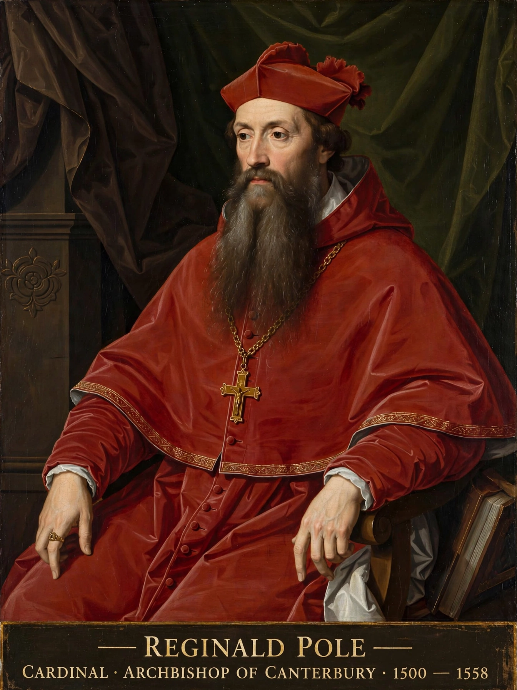

| Reginald Pole | |
|---|---|
| Born | 3 March 1500, Stourton Castle, Staffordshire |
| Died | 17 November 1558, London |
| Office | Archbishop of Canterbury (1556–1558); cardinal |
Reginald Pole (1500–1558) was an English cardinal, the last Roman Catholic Archbishop of Canterbury, and a leading figure of the Catholic Counter-Reformation. A great-grandson of George, Duke of Clarence, he had a strong Yorkist claim to the throne; his mother, Margaret Pole, Countess of Salisbury, was executed by Henry VIII in 1541.
Educated at Oxford and Padua, Pole broke with Henry VIII over the annulment of his marriage to Catherine of Aragon, publishing De unitate (1536) against the royal supremacy. Made a cardinal in 1536, he served as papal legate and narrowly missed election as pope in 1549–50.
Under Mary I, Pole returned to England in 1554 as papal legate, reconciling the kingdom with Rome. Consecrated Archbishop of Canterbury in 1556, he pursued reform of the English clergy while Mary's regime burned Protestant heretics. He died on 17 November 1558, the same day as Mary, reportedly of influenza.